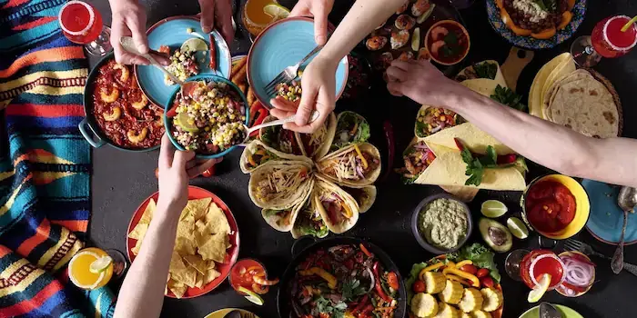
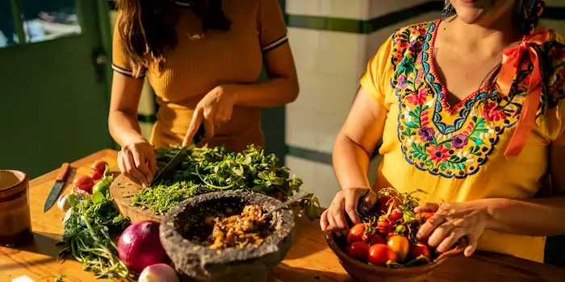

About
Our Story
Taste of Mexico was created to celebrate the rich flavors, traditions, and cultural heritage of authentic Mexican cuisine. Mexican food is deeply rooted in history, blending indigenous ingredients with centuries of culinary influence to create dishes that are vibrant, meaningful, and full of character.
From family recipes lovingly passed down through generations to the bold and colorful street food found in every corner of the country, our goal is to bring the true taste of Mexico to your table. We want every visitor to experience not only the delicious flavors, but also the stories, passion, and traditions behind each dish.
Through carefully selected recipes and detailed instructions, Taste of Mexico invites you to explore, cook, and connect with the authentic essence of Mexican gastronomy.
Our Mission
We are committed to preserving traditional Mexican recipes and honoring the rich culinary heritage of our country. Mexican cuisine is more than just food — it is history, culture, family, and celebration. Through this website, we aim to share authentic flavors, cooking techniques, and ingredients that have been passed down through generations.
Our goal is to inspire people around the world to explore the diversity of Mexican gastronomy, from comforting homemade dishes to vibrant street food favorites. By providing detailed recipes and cultural context, we hope to encourage everyone to cook with passion, appreciate tradition, and bring the true taste of Mexico into their own kitchens.